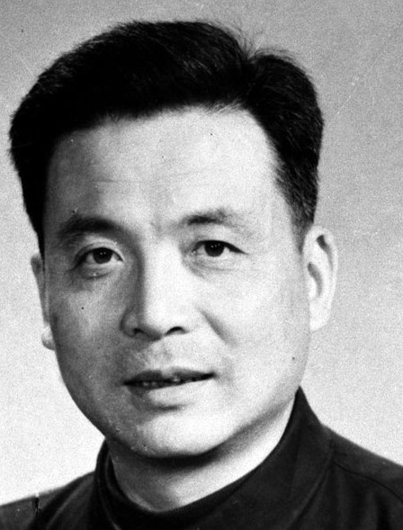

-------------------------------------------------------------------------------------------------------------- produced by Sawatari™ ------------------------------------------------------------------------------------------------------------------

邓稼先（1924—1986），安徽省怀宁县人，中国杰出的科学家、中国“两弹”元勋，先后毕业于西南联合大学和美国普渡大学，获物理学博士学位，1950年回到祖国；他参加组织和领导我国核武器的研究、设计工作，是我国核武器理论研究工作的奠基者之一；从原子弹、氢弹原理的突破和试验成功及其武器化，到新的核武器的重大原理突破和研制试验，均做出了重大贡献；作为主要参加者，其成果曾获国家自然科学奖一等奖和国家科技进步奖特等奖；邓稼先被称为“中国原子弹之父”。
邓稼先1924年6月25日出生于安徽省怀宁县一个书香门第的家庭。 他出生后不久，全家迁往北平，邓稼先父亲邓以蛰任清华大学及北京大学文学院教授，与杨振宁父亲杨武之是多年之交。两家祖籍都是安徽，在清华园里又成为邻居。邓稼先和杨振宁从小结下了深厚友情，后来，二人先后进了北平崇德中学。欢乐的少年时光并不长久，邓稼先生活在国难深重的年代，七·七事变以后，端着长枪和刺刀的日本侵略军进入了北平城。不久北大和清华都撤向南方，校园里空荡荡的。邓稼先的父亲身患肺病，喀血不止，全家滞留下来。1941年邓稼先进入了国立西南联合大学——西南联大成立于抗战极端困难时期，由清华大学、北京大学、南开大学三校合并而成，条件简陋，生活清苦。尽管如此，联大却有非常良好的学术空气，先后培养出了不少优秀人才，邓稼先受业于王竹溪、郑华炽等著名教授，以良好的成绩圆满完成了大学四年的学业。 抗日战争胜利时，他拿到了毕业证书，在昆明参加了中国共产党的外围组织“民青”，投身于争取民主、反对国民党独裁统治的斗争。翌年，他回到北平，受聘担任了北京大学物理系助教，并在学生运动中担任了北京大学教职工联合会主席。 抱着学更多的本领以建设新中国之志，他于1947年通过了赴美研究生考试，于翌年秋进入美国印第安那州的普渡大学研究生院——由于他学习成绩突出，不足两年便读满学分，并通过博士论文答辩。此时他只有26岁，人称“娃娃博士”。但取得学位9天后，他毅然放弃了在美国优越的生活和工作条件，回到了一穷二白的祖国。
回国后，邓稼先在中国科学院近代物理研究所任助理研究员，1958年8月奉命带领几个大学毕业生从事原子核理论研究。1958年8月调到新筹建的核武器研究所任理论部主任，负责领导核武器的理论设计，随后任研究所副所长、所长，核工业部第九研究设计院副院长、院长，核工业部科技委副主任，国防科工委科技委副主任。1958年秋，二机部副部长刘杰找到邓稼先，说“国家要放一个‘大炮仗’”，征询他是否愿意参加这项必须严格保密的工作。邓稼先义无反顾地同意，回家对妻子只说自己“要调动工作”，不能再照顾家和孩子，通信也困难。从小受爱国思想熏陶的妻子明白，丈夫肯定是从事对国家有重大意义的工作，表示坚决支持。从此，邓稼先的名字便在刊物和对外联络中消失，他的身影只出现在严格警卫的深院和大漠戈壁。邓稼先就任二机部第九研究所理论部主任后，先挑选了一批大学生，准备有关俄文资料和原子弹模型。1959年6月，苏联政府终止了原有协议，中共中央下决心自己动手，搞出原子弹和人造卫星。 邓稼先不仅在秘密科研院所里费尽心血，还经常到飞沙走石的戈壁试验场。他冒着酷暑严寒，在试验场度过了整整8年的单身汉生活，有15次在现场领导核试验，从而掌握了大量的第一手材料。 1964年10月，中国成功爆炸的第一颗原子弹，就是由他最后签字确定了设计方案。他还率领研究人员在试验后迅速进入爆炸现场采样，以证实效果。他又同于敏等人投入对氢弹的研究。按照“邓—于方案”，最后终于制成了氢弹，并于原子弹爆炸后的两年零八个月试验成功。这同法国用8年、美国用7年、苏联用10年的时间相比，创造了世界上最快的速度。
一次，航投试验时出现降落伞事故，原子弹坠地被摔裂。邓稼先深知危险，却一个人抢上前去把摔破的原子弹碎片拿到手里仔细检验。身为医学教授的妻子知道他“抱”了摔裂的原子弹，在邓稼先回北京时强拉他去检查。结果发现在他的小便中带有放射性物质，肝脏破损，骨髓里也侵入了放射物。随后，邓稼先仍坚持回核试验基地。在步履艰难之时，他坚持要自己去装雷管，并首次以院长的权威向周围的人下命令：“你们还年轻，你们不能去！” 1985年，邓稼先离开罗布泊回到北京，仍想参加会议。医生强迫他住院并通知他已患有癌症。他无力地倒在病床上，面对自己妻子以及国防部长张爱萍的安慰，平静地说：“我知道这一天会来的，但没想到它来得这样快。” 1986年7月29日，邓稼先因全身大出血去世；时任国务院总理的赵紫阳专程从外地赶回北京参加邓稼先的追悼会，他说：“邓稼先同志是我国科技工作者的典范，是我国科技工作者的骄傲。”